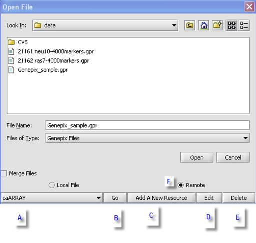
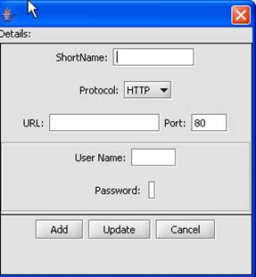

Add a Remote Data Source
This help section describes basic usage, defining and modifying remote sources to access data. The remote sources and file types you can access are defined in the configuration settings.

A. Listing of defined remote sources.
B. Accesses the remote source selected.
C. Opens the Data Source Definition page that is used add remote sources.
D. Edit the remote source parameters.
E. Remotes the remote source.
F. When this radio button is selected, the open file dialog window is updated to include managing remote sources functionality.
1 From the Main Menu, click on Open/File/Add Data Source.
2 Populate the Data Source Definition page.
。 Note: URL and Short Name are required fields.
3 Click on OK. The configuration setting is update to reflect the addition data source
Note: The configuration setting is update to reflect the addition data source. This data source will appear
1 From the Main Menu, click on Open/File.
2 Select the data source you soul like to modify from the Data Source.
3 Click Edit.
4 Modify the contents of the Data Source Definition page.
。 Note: URL and Short Name are required fields.
5 Click Update. The system will display the modified resource in the list of available remote sources. The configuration setting is update to reflect the addition data source.

t clicking on the element and using the pop-up menus or using the Edit menu from the main menu bar.